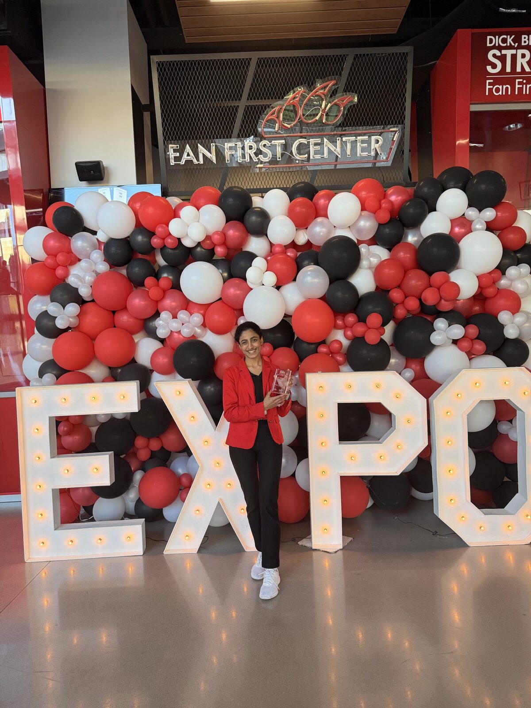

Questions before you apply?
The program is designed to be flexible, but expectations should be clear before a match is made.
Do I have to be an Honors student?
No. Both Honors and non-Honors students may participate as mentors or mentees. Honors requirements apply only to students completing the program as an Honors Experience.
Is this a pre-approved University Honors Experience?
Yes. Eligible Honors students may complete the program as a pre-approved Honors Experience with the applicable 75-hour requirement and reflections.
How long does a mentee participate?
Normally one academic semester. This structure is designed around alternating academic and co-op rotations.
If I mentor in Fall, do I have to mentor again in Spring?
No. You may choose whether you are willing to take a new mentee in the second semester.
Does my whole Senior Design team have to participate?
No. Mentorship is individual. If only one member of a multi-student Senior Design team wants to mentor, that is acceptable.
How many mentees can one senior mentor?
One mentee at a time.
Can non-Honors students mentor or become mentees?
Yes. Honors status is not required for program participation.
Do mentees need previous engineering, research, or co-op experience?
No. The program is specifically intended to give earlier-stage students meaningful exposure. Curiosity, reliability, and willingness to learn matter more than having an advanced résumé.
Which majors can participate?
Current matching is focused on Computer Science and Mechanical Engineering. Students from other engineering disciplines may email Prissha Chawla to ask whether an appropriate project match can be arranged.
Is there a minimum GPA?
No. GPA is collected as one piece of application information, but there is no minimum GPA requirement.
Are mentees official members of the Senior Design team?
No. Mentees do not register for the senior design course, they participate in the broader project environment for learning and appropriately scoped contribution, but they are not members of the official Senior Design course team.
Is participation paid?
No. Mentor and mentee participation in the program is unpaid.
Is placement guaranteed?
No. Matches depend on available Senior Design projects, available mentees, technical fit, student interests, and schedule compatibility.
Is there an application deadline?
There is currently no set deadline for . Applications remain open while appropriate matches are available.
What reflections are required?
Participants will complete a mid-semester reflection and an end-of-semester reflection. The forms will be provided directly to active participants later.
What counts as mentoring time for a Senior Design mentor completing the Honors Experience?
Ordinary Senior Design work completed independently does not count simply because you are a mentor. Mentorship-related activity can include direct work with the mentee, explaining project activity during shadowing, reviewing mentee work, discussing technical decisions, preparing learning activities, interviewing potential mentees, and mentorship-related reflection.
Not sure if you want to participate?
Talk to a current mentor or mentee. They can tell you what the program is really like, so you can decide if it's right for you.

Prissha Chawla
PhD Student, Computer Science
University of Cincinnati
Prissha earned her B.S. in Computer Science from the University of Cincinnati and completed Senior Design in Spring 2026. Her Senior Design team received 1st Place in the Technical Excellence category at the Spring 2026 Senior Design Expo.
After experiencing Senior Design as a student and later advising a Senior Design team, she developed the Mentor–Mentee Program to give earlier-stage engineering students meaningful project exposure while creating structured technical leadership opportunities for graduating students.
Palash Patel
2nd Year, Computer Science and Computer Engineering
University of Cincinnati
Palash is a mentee in the program (Fall 2026) and manages this website.
Current mentors and mentees who would like to be featured on the site are welcome to reach out to Palash.
Still interested?
Applications are open for . There is no current deadline.